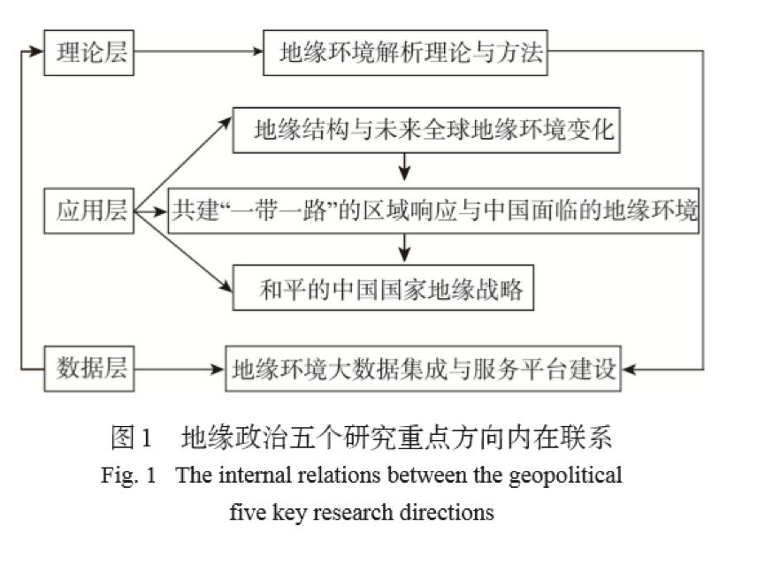

收录于合集

作者
胡志丁；陆大道；杜德斌；葛岳静；骆华松
★
摘要： 未来十年乃至更长时间，世界大国之间最有可能发生实力盛衰，权力转换，世界格局和区域格局发生相应变化，地缘政治研究的重要性将会日益凸显。中国地缘政治学在过去的几十年发展中取得了可喜的成绩，但是仍然处于发展阶段，凝练方向、汇聚合力才是当前中国地缘政治学当务之急。采用文献研究法和专家咨询法，归纳了未来十年中国地缘政治学重点研究的五个方向，即地缘环境解析理论与方法、地缘结构与未来全球地缘环境变化、共建“一带一路”的区域响应与中国面临的地缘环境、和平崛起的中国国家地缘战略和地缘环境大数据集成与服务平台建设，并对每一个重点研究方向阐明了其原因和各研究方向的当前研究现状、未来研究思路。最后对五个重点研究方向之间的内在联系以及国内外地缘政治学发展思路的不足进行了探讨。
关键词： 地缘政治学；地缘环境；“一带一路”；地缘格局；地理学
★
一、引言
2010年美国国家科学院研究理事会出版 《理解正在变化的星球：地理科学的战略方向》 一书，书中列举出11个未来地理科学的战略方向，其中之一就有“地缘政治变化如何影响和平与稳定”。2014年中国地理学会年会在成都召开，傅伯杰受中国地理学会、国家基金委地学部等委托做了“走向世界的中国地理学”主题报告，报告指出未来中国地理科学发展的 九大战略方向 ，其中之一就有“全球化时代的世界地理与地缘政治经济研究”。 因此，地缘政治研究必将成为未来十年，甚至更长时间内中国乃至世界主要国家的地理学主攻方向之一。 这就不难理解 陆大道 等在2013年联名撰文呼吁“地理学者应该紧跟时代的步伐，准确把握国家利益之所在，抓住机遇做出贡献，特别是要在抓实的理论研究基础之上，能向国家提交更多具有前瞻性、全局性和思辨性的咨询报告，向社会展示地理学界对世界问题的看法和建议”的倡议的重要性。
地缘政治学在中国地理学界的复兴以及西方国家地缘政治研究向传统的地缘战略、地缘安全研究的转向都深刻地受到当前全球地缘政治经济格局变化的影响。 因为进入21世纪以来，世界主要经济和实力中心正在加速从欧洲—大西洋地区向亚洲—太平洋地区转移，国际地缘政治正在向 “两超多强” ，甚至 “两极地缘格局” 发展。2015年1月20日国家统计局公布中国国内生产总值，以美元计算其总量首次突破10万亿美元大关。中国成为继美国之后全球第二个进入“10万亿美元俱乐部”的成员，但人均GDP排名仅为73名。当前中国的经济总量已经约为第三大经济体日本的2倍，超过了整个欧元区总和，是人口大国印度的5倍。英国经济与商业研究中心（CEBR）预测到2025年中国就能坐上世界经济老大的宝座，赶超的确切时间点可能因为中国的“新常态”而延期。
因此，2016-2025年将成为世界地缘政治格局变动最为激荡的十年，也是中国实现中华民族伟大复兴最为关键的十年。 十八大后，习近平指出，“现在，我们比历史上任何时期都更接近中华民族伟大复兴的目标，比历史上任何时期都更有信心、有能力实现这个目标”。然而实现这个目标的道路并不是一帆风顺，而是困难重重。这就需要所有人，特别是地理学的研究人员，担当起为中国和平崛起和民族伟大复兴提供理论支撑的重担。因为地缘政治学是一门经邦济世之学，从诞生之日起其命运总是与大国间的此起彼伏和兴衰更替紧密相连， 而地缘政治脱胎于政治地理学，是建立在地理学广阔深厚的学术土壤之中。 中国地缘政治研究已经中断多年，必须要强化地缘政治研究的时间紧迫感，以十年为期限，明确国内地缘政治研究的时间维度和研究主题。因此，深化对地缘政治学理论和实践的研究将有助于中国和平崛起、民族伟大复兴和共建“一带一路”的实施。 然而中国地理学界对地缘政治学的研究仍处于起步阶段， 虽然对地缘政治经典理论、地缘战略、地缘政治经济格局演变、能源地缘政治、地缘环境研究框架体系、地缘环境评价方法、区域地缘政治环境以及欧美国家政治地理学和地缘政治学研究进展等领域取得了一定的研究成果，但是仍没有形成完整的、服务于中国当前所处的国际地缘环境激变下的研究框架体系，更没有对未来十年中国地理学之地缘政治学重点研究方向进行探讨和达成共识。为了凝练方向、汇聚合力， 中国地缘政治学的当务之急是明确服务于国家崛起、民族复兴和共建“一带一路”的可作为之处，并在此基础上形成未来十年重点研究方向。 唯有如此，才能遵循中国地理学长期坚持的“以任务带学科”而获得蓬勃发展的基本经验，才能壮大地缘政治研究，才能更好地服务于国家发展。
本文主体内容由三个部分构成：一是 简要介绍本文研究思路与方法； 二是 提出未来十年中国地缘政治学重点研究方向，阐明原因和各研究方向的当前研究现状、未来研究重点等； 三是 论文结论与讨论部分，特别是讨论各重点研究方向之间的内在联系，以展现其整体性。
二、研究方法
研究思路得益于2010年Jones等发表的有关批判地缘政治学研究新方向的论文。在该文中，为了探讨批判地缘政治学未来研究的方向，特邀5位从事批判地缘政治学研究的人文地理学者在明确规定下独立撰写有关未来批判地缘政治研究方向，而后汇总成文。但是由于5位撰稿人完全不知道对方所写，而且彼此风格迥异，使得论文虽然探讨了未来研究的可能方向，但是共识性较弱。 鉴于中国当前地缘政治学研究刚刚处于复兴阶段，凝练方向、汇聚合力才是当前当务之急。 因此，本文首先由第一作者根据对国内外当前地缘政治研究现状提出想法和大致列出地缘政治学未来重点研究方向，然后通过邮件发送给本领域从事过地缘政治研究的4位人文地理学专家。选择以上4位专家的原因主要是因为他们在近期各自相关论著中或多或少提出过有关地缘政治学未来的研究方向，并且考虑到时间和凝练方向的原因没有选择更多的专家学者。4位专家根据要求和自身理解，修改、补充和完善未来十年中国地缘政治学重点研究方向。论文第一作者汇总4位专家的修改意见后，归纳、合并和总结，并将汇总后的重点研究方向再次发送给4位专家直到基本形成共识。论文由第一作者独立撰写，其他4位专家修改而成。由于对每一个重点研究方向需要分析原因和总结当前的研究现状以及探讨未来研究重点， 因此本文的研究方法主要是文献研究法和专家咨询法。
三、未来十年中国地缘政治学的重点研究方向
（一）地缘环境解析理论与方法
1994年 杨吾扬 首次提出 “地缘环境” 一词，2000年以后其在中文期刊出现的频率开始明显增加。同时，地缘环境作为一种时代时髦的术语不断出现在各类新闻、媒体、期刊、书籍和大众言语中。但是 直到2013年国内才出现第一篇对地缘环境概念、分析框架解析的论文。 “地缘环境”作为用来描述不同尺度不同区域与“地缘”有关的环境状况时显然是用得多，而对其本身研究得少。
从当前国内外地缘政治发展现状来看，对地缘环境解析的理论与方法研究无疑是摆在当前地缘政治研究学者面前的最为迫切的学科问题。 从西方地缘政治学发展历程来看，虽然其经历了 古典地缘政治学、批判地缘政治学、流行地缘政治学和反地缘政治学 四个流派。但是 古典地缘政治学 过于偏重对国家地缘战略研究，如麦金德的陆权论、马汉的海权论以及斯皮克曼的边缘地带论，而 批判地缘政治学 在对古典地缘政治批判性的反思上将地缘政治理解为话语，指出其具有很强的文化根植性，重点研究地缘政治实践、地缘政治传统、地缘政治与流行文化和结构地缘政治四大主题，其批判的方向主要表现在三个方面，即批判超越文本的研究、批判以国家为中心的世界政治研究和批判西方中心主义。 流行地缘政治学 则将研究重点转向电视、音乐、动漫、网络、广播等媒体，指出这些媒体是重要的，因为从这些媒体中能够找到国家地缘政治的表述和实践，可以用来探讨国家外交政策中的实践地缘政治，研究重点集中在讨论冷战时期美苏之间以及冷战后的美国。 反地缘政治学 通过挑战传统地缘政治中的物质化的地缘政治权力和由政治和经济精英有关世界的陈述等两个方面，将其界定为公民社会中的一种道德的、政治的和文化力量，并指出这种力量是一种自下而上的力量。反地缘政治学是一种规范性的研究，具有很强的价值取向。
纵观国内外地缘政治学的发展，虽然已经取得较大的研究成果，但其始终无法精确回答不同尺度不同区域地缘环境状况的时空演变或者需要借助某些研究者长期的对特定地区特定问题的积累才能够回答。 例如，国内地缘政治学者一直强调中国周边地缘环境复杂，但是其如何复杂？回答却是零散的和多样的，比如周边邻国众多、领土争端、历史遗留问题等等，更加缺乏定量的评价研究。这就导致无法真正理解在中国周边国家数量不变，领土争端又没有解决的情况下，中国周边地缘环境状况的时空变化。这种情形在探讨全球尺度、区域尺度和地区尺度地缘环境状况时都存在同样的问题。以至于毫无察觉更无法提前预知2015年乌克兰危机下克里米亚脱乌入俄和缅甸果敢冲突再次爆发。而 当前地缘政治学发展更多的是起到事后诸葛的作用 。为了解决此问题，必须树立符合时代需求的新研究方向，即强化对地缘环境解析理论和方法研究。这包括以下几个方面：
1.地缘环境概念解析、构成、各组成要素之间的内在相互作用机理以及地缘结构，同时要探讨地缘环境的整体分析框架、不同尺度不同区域地缘环境时空演变机制以及不同行为体（国家精英、大众和学者）；
2.不同地缘政治实践手段（军事的和非军事的；传统的和非传统的）对地缘环境影响机制；
3.地缘环境的定量评价方法研究，包括不同尺度地缘环境时空变化的评估模型、地缘结构稳定性评价模型和各因素对地缘环境影响的定量评价模型。另外，地缘环境研究须发展一批具有全球公认性的评价模型和指标，如经济学中的投入产出模型和社会学中的人类发展指数，唯有此才能扩大和深化地缘政治学的研究，提升地缘政治学的科学性和学科影响力。
（二） 地缘结构与未来全球地缘环境变化
此方向作为未来地缘政治研究中的重点之一有两个原因：其一， 当前国际地缘政治格局正在加速向“两超多强”或“两极格局”转变。由此导致美国重返亚太、日本不断尝试修改和平宪法以及印度、菲律宾、越南、澳大利亚等国家欲借助美国平衡中国在亚太影响。整体的国际地缘环境似乎正在再次走向冷战，激起全球对未来局势的讨论和担忧。 其二， 结构主义的研究方法在人文地理学中应用已经相当广泛，地缘政治学的研究方法论也经历了自然主义模式、空间—权力关系模式和结构主义模式的转变。 但是，随着哲学和相关学科对结构主义分析方法研究深入，逐渐暴露出当前地缘政治学对结构主义分析方法应用的不足，更无法正确指导和预测未来全球地缘环境变化。
从 马汉、麦金德、斯皮克曼到科恩 强调的是地缘结构中的空间结构，阐述了控制空间对获取权力的意义。 沃勒斯坦、亨廷顿 等强调的是形成地缘结构中的地缘关系，沃勒斯坦阐述的是由世界经济不平等分工关系而形成的“中心—外围结构”，亨廷顿阐述的则是由世界不同文化或文明相互作用关系所形成的世界格局。 其他的研究者 更多的是强调的由军事、经济等构成的国家综合实力所形成的地缘结构，探讨的是结构的因果作用机制。从整体上来看，到目前为止地缘政治学对地缘结构的研究既不全面，同时又不深入。
结合建构主义以及其他相关学科对结构的分析认为， 未来对地缘结构的研究至少应该考虑以下几点：
1.同时探讨三种结构，即地缘物质结构、理念结构和空间结构。 地缘结构不是单纯的由军事、经济实力等物质因素所构成，同时还包括由国际规范、规则、制度、社会意识等观念或知识所构成。同时，由于地理或空间对权力具有制约作用，地缘结构还应包括对地缘空间结构的研究。
2.研究两种作用机制，即结构的因果作用机制和建构作用机制。 地缘结构中的地缘体主要是国家，其与人一样具有身份和利益。因此，不能简单地将地缘结构的作用机制限定在因果作用上，地缘结构对国家的影响不仅表现在行为上，还表现在影响国家的属性上（身份和利益）。
3.区分地缘结构的两种层次。 地缘结构可以划分为微观结构和宏观结构，微观地缘结构是指地缘体之间的互动结构，由地缘体的意愿、信念、战略、实力等因素在诸多地缘体之间的分配状况构成，宏观结构是指地缘体所构成的国际体系结构。
4.各种地缘关系的变化如何影响地缘结构及其功能。 从地缘政治、地缘经济到地缘文化的转变，说明构成地缘结构的地缘关系在发生变化，而这种变化又深刻地影响着地缘结构对地缘体行为和属性的作用。即使是仅仅考虑由地缘经济关系所构成的地缘结构，国家间高强度的经济相互依赖与不平等的经济相互依赖所构成两极地缘结构的作用明显不同。
5.探索地缘结构时空过程与演变规律。 如果仅仅从物质结构或空间结构来看待，那么地缘结构的变化仅仅表现在军事、经济实力在国家之间的转移和对不同地理空间的强调。本质上美国与苏联构成的两极格局与美国和中国构成的两极格局并没有区别，但是一旦把地缘结构融入文化，那么国际地缘结构就发生了改变。当前侵略和霸占某一个国家的举动已经变得不再流行，取而代之是竞争与合作。因此，只有在对地缘结构充分的研究基础之上才能理解未来全球地缘环境的变化。
（三）共建“一带一路”的区域响应与中国面临的地缘环境
2013年9月和10月，中国国家主席习近平出访中亚和东南亚期间，先后提出共建“丝绸之路经济带”和“21世纪海上丝绸之路”的重大倡议，继而在2015年国家发展改革委、外交部、商务部联合发布《推动共建丝绸之路经济带和21世纪海上丝绸之路的愿景与行动》。共建“一带一路”得到了国际社会的高度关注，国内众多研究者结合自身专业对“一带一路”进行了解读。但是毫无疑问 ， “一带一路”将对未来地缘环境产生深远影响，这几乎已经成为国际社会的一种共识。虽然，国内部分学者反对将“一带一路”解读政治化，但是在当前国际形势和地缘格局下理解国际社会，特别是美国对“一带一路”的看法至关重要。“一带一路”倡议已经引起日本、俄罗斯、印度、英国、德国等大国在内的全球各大区域政府、学者、媒体的激烈争论，各区域响应不尽相同。 未来大国博弈的焦点之一一定是围绕着共建“一带一路”而展开。 美国国内国际关系学和地缘政治学的发展为本方向的探讨提供了可能。
受大国战略博弈加剧、全球治理成效甚微和国际合作出现新的阻力的影响，美国国内国际关系研究出现三个回潮，即权力政治回潮、国家中心论回潮和民族主义回潮。 在此三种回潮之下必然加大美国对共建“一带一路”的误判，强化将经济问题政治化的倾向。从历史上来看，美国本身就是这种技能的创造者和实践者，例如利用自己的霸权强制其他国家经济开放且常常以经济制裁为手段维护国家利益等。而美国国内地缘政治学的研究进展更为其从地缘政治角度理解共建“一带一路”提供了理论依据。批判地缘政治学将地缘政治定义为由一组政治话语、陈述和一系列的实践组成，重点集中在解构地缘政治话语和揭露隐藏在话语、地理知识等背后的权力关系。 奥图瓦赛尔 指出，只有通过历史性和情境性，才能更好地理解地缘政治的概念、理论和对全球空间的书写。 从中国的角度来看， 发展经济仍然是当前工作重心，中国倡议共建“一带一路”旨在促进经济要素有序自由流动、资源高效配置和市场深度融合，是为了致力于维护全球自由贸易体系和开放型世界经济。但是 从美国的角度来看， 共建“一带一路”话语背后隐含政治目标，中国欲借助“一带一路”强化中国与相关国家的联合，“一带一路”对全球空间新的书写更是中国的地缘战略空间取向，通过经济合作达成利益共同体、命运共同和责任共同体，是新的国际联盟的体现，最终是为了取代美国的全球霸权。 中美理解的偏差是由两国发展历史和当前国际形势情景性决定的，更受到美国国内相关学科发展的影响。 美国国内在流行地缘政治的研究进展，为理解美国阻碍共建“一带一路”的可能途径提供了支撑。流行地缘政治强调对电视、音乐、媒体、动漫、网络、广播等的研究，因为这些媒体能够塑造民众对世界政治事件的理解，并且能够引导舆论走向。美国在冷战期间以及冷战后期对苏联、中国、东南亚、中东和非洲地区都不同程度使用这些工具。其他国家，如印度、俄罗斯、英国、德国等大国以及中东、非洲小国因为各自所处的国际地位和国内环境不同必然对“一带一路”倡议产生不同的理解，其响应自然不同于美国。
因此，欲探讨共建“一带一路”对中国未来地缘环境的影响，必须从以下几个方面入手：
1.国际政治、经济发展的整体形势上研判不同国家对共建“一带一路”的态度；
2.从主要大国发展历史以及相关学科发展的传统，探索各国如何解读共建“一带一路”；
3.汇总以上两大点，探索不同区域，特别是沿线重点区域对“一带一路”倡议的响应；
4.“一带一路”推进如何改善中国的地缘环境；
5.综合正反影响，对中国面临的地缘环境进行定量评价。
（四）和平崛起的中国国家地缘战略
一般来讲，存在三种情况的大国需要制定国家地缘战略：其一， 伴随国家经济实力的提升，为了巩固和提升国家的国际地位，服务于国家利益，大国一般需要制定相应的地缘战略，例如1890年马汉为美国提出“海权论”、1896年拉策尔为德国提出“国家有机体论”、1904年麦金德为英国提出“陆权论”。 其二， 处于霸权的国家，为了维护其霸权和既得利益需要制定地缘战略，例如1944年斯皮克曼为美国提出“边缘地带论”。斯皮克曼在《和平地理学》中就直接指出：“‘边缘地带论’就是为了适应美国战后称霸世界的地缘战略构想”。 其三， 霸权国家防止或已经受到挑战，将要衰落或已经处于衰落的时期需要制定地缘战略，例如1997年布热津斯基提出《大棋局》。布热津斯基在其中指出：“美国不仅是第一个，也是最后一个超级大国，预计到2015年左右，美国将失去世界霸权地位。在此之前，为了未雨绸缪，需要早作准备，建立符合美国利益的国际秩序”。
21世纪以来，中国经济的高速增长使得短短10年时间，中国GDP排名由2000年的第六上升为2010年的第二。伴随中国整体军事、经济实力的提升，美国欲防止中国挑战其霸权，威胁其全球利益，高调重返亚太并实施亚太再平衡战略。中国周边国家也受此影响，纷纷制定相应的地缘战略以抗衡中国，由此激起国内外众多学者加强了对地缘战略的研究。在此情况下，必然突出对中国国家地缘战略研究的迫切性。中国地缘战略制定的目标并不是为了统治全球，而是为了国家安全，是为了防止历史的悲剧再次发生。因此，中国和平地缘战略的制定与以往任何时候历史上的国家地缘战略制定都存在一定程度的差异，这既与中国地缘战略制定的目标有关，也与中国的地缘战略制定环境的特殊性有关。
中国在制定地缘战略时需要重点考虑以下几个方面：
1.中国地缘战略的定位。 当前美国的地缘战略定位是防止任何欧亚大陆国家挑战美国的霸权，但是却强化了中俄联盟，恶化了全球地缘环境。中国地缘战略的定位不能以挑战美国的霸权和主导亚太地区安全局势为目标，而应以维护国家安全，确保海外利益为主，地缘战略的重点方向应是维护全球和地区的和平，促进地缘经济合作。
2.历史上大国地缘战略的制定原理。 通过分析古典和现代的地缘战略，归纳总结地缘战略制定的基本原理。地缘战略以及由地缘战略所导致的地缘区位具有主体间性。
3.中国地缘战略制定环境的特殊性。 任何地缘战略都是在当时特殊的环境中制定的，中国地缘战略制定的特殊环境主要体现在美国仍是当前霸权国，虽然其影响正在下降，但是影响仍然强大。
4.处理与其他大国地缘战略的关系。 美国崛起之际，英国正处于与俄国争夺之中，而第一、第二次世界大战更是为美国创造了良好的环境，但是中国周边国家俄罗斯、日本、印度均制定了相应的地缘战略，对中国的地缘战略制定和实施起到阻碍作用。
（五）地缘环境大数据集成与服务平台建设
过去地缘政治研究一直过于偏重定性分析，近年来地缘政治中的定量研究获得了较大的发展。但是 中国“主动预防性外交”迫切需要全面掌握地缘环境信息及其动态变化 ，当前国内地缘政治学发展无法满足国家地缘决策中对地缘环境大数据快速获取、处理、评估、综合分析的需求。随着云技术的发展，大数据时代的来临，地缘政治研究更加需要强化技术支撑，探索大数据与地缘环境研究的结合点。2013年爆发的“棱镜门”事件使得各国开始广泛关注数据和大数据服务于国家安全的问题。美国更是全球最早关注大数据的国家，2010年美国政府就要求各部门实施自己的大数据战略，实现从数据到知识、知识决策、决策到行动的快速转化。美国大数据研究已经广泛应用于营销、预测、市场分析、公共政策等领域。中国对大数据的研究在划界、勘界、联检及界务管理中得到很好的应用，中国外交、测绘等部门通力合作，完成了22000km国界海量信息的数字化建模与集成管理，研制了数字化定界等业务信息平台。甄峰等探讨了大数据应用于中国人文—经济地理学中的相关问题。
地缘环境大数据集成与服务平台建设主要涉及五个方面，即地缘环境数据获取处理、地缘环境数据库构建、地缘环境数据分析、地缘环境数据服务平台和服务应用。 具体而言，应重点考虑以下几个研究领域：
1.地缘环境大数据的多粒度信息建模、获取与处理技术， 主要涉及多尺度政治、社会、经济信息数据获取与空间化，不完备信息条件下各领域信息数据获取，多源多尺度、多语言多语境地理空间信息数据的整合与编绘等。特别是要结合地缘环境解析理论与方法，利用相关数据开发和整合形成新的数据。
2.地缘环境大数据分析技术， 主要涉及如何在地缘环境解析方法基础上，结合地缘环境大数据的特点，利用计算机技术对地缘环境大数据进行分整体、各类专题分析与动态处理。
3.地缘环境大数据的集成化管理与服务， 根据实际需要开展地缘环境大数据服务平台技术设计，研究地缘环境热点事件的专题图和应急制图、态势搜索服务、分析评价、精准管理等的地缘环境大数据服务平台系统。
四、结论与讨论
本文采用文献研究法和专家咨询法，将中国未来十年地缘政治学重点研究方向归纳为五个方面，对每一个研究重点方向都阐明了其原因和研究现状以及未来研究大致思路。虽然明确了各重点研究方向和各方向的研究思路，但是对每一个研究重点方向的研究框架、研究思路、研究具体领域等细节仍需要进一步完善和修改。
未来十年中国地缘政治学的五个重点研究方向虽然分开撰写，但是却存在内在联系，是不可分割的整体（图1）。 五个重点研究方向包括三个层面，即理论层、应用层和数据层。 理论层面 为应用层面和数据层面提供整体的理论和方法指导，数据层面为应用层面提供相关的数据支撑以及为理论的建立和批判提供经验证据。 应用层面 涉及三个尺度，即全球尺度、地区尺度和国家尺度。任何国家地缘战略的制定都必须立足于国家利益，但是同时充分考虑全球和地区尺度的地缘环境状况。

过去国内外地缘政治学的发展为理解地理与国际政治之间的互动提供了理论支撑，但是地缘政治学的发展思路和发展现状也逐渐暴露出不足。最近几十年来国外地缘政治学发展思路长期受社会理论的影响，发展出批判地缘政治学、流行地缘政治学、反地缘政治学、情感地缘政治学等。这使得 地缘政治学在微观层面获得极大的发展，但是在宏观层面地缘政治学却逐渐影响甚微。 特别是随着云技术、动态监测和动态模拟技术在其他相关领域发展和应用，人们对全球、地区、国家三个尺度的地缘环境大数据获取、处理、分析并应用于国家决策的渴求变得越来越强烈。 由此，必须转变当前国外地缘政治学发展思路，重新探索地缘环境解析理论与方法，特别是要在地缘环境大数据集成与服务平台建设的基础上，结合理论与方法将其应用于当前各种具体的地缘环境问题的研究中。
文章来源： ** 《地理研究》2017年第2期**
筛选： 晞哲 编辑： 小宜 沉安